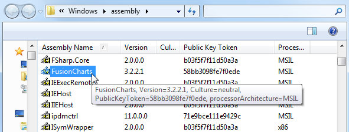
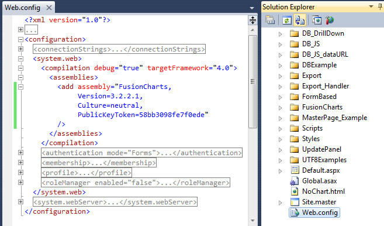

FusionMaps XT can effectively be used with Microsoft ASP.NET (VB) to plot data over geographic locations. In this section and the following, we'll show examples on how to plot data on FusionMaps XT using various methods in ASP.NET (VB).
Even when used with ASP.NET (VB), FusionMaps XT internally uses JavaScript and XML/JSON to render the maps. The ASP.NET (VB) code actually helps you output this JavaScript and XML/JSON. To aid your understanding of this section, we will recommend you to go through the following sections of documentation (if you have not already read them):
- Creating your first map
- Changing map dimensions
- Configuring number formatting
- Using XML or JSON as data source
- Using JavaScript API of FusionMaps XT
- Creating drill-down maps and LinkedCharts
- Exporting maps as images or CSV
- How FusionMaps XT works?
In this section, we will show a few basic examples to help you get started.
We'll cover the following examples here:
- Rendering map from array using Data String Method.
- Rendering map from array using Data URL Method.
- Rendering map using Form based data and
- Rendering drill-down maps pulling data from database.
- Copy all the SWF and JavaScript files from Download Pack folder to a folder in your ASP.NET Project (for demo's sake, let us name it Maps)
- You can use the ASP.NET Wrapper class, FusionCharts.dll (contained in Download Package > Code > VB_NET > Bin folder). Copy the file into the Bin folder of your Project. In case you are facing any issue with the DLL due to security issues in your server, you can choose to use the FusionCharts.vb file from Download Package > Code > VB_NET > src folder and keep it in App_Code folder.
We are now providing strongly named assembly (FusionCharts) that you can put it into your GAC (Global Assembly Cache). Once you have added FusionCharts in GAC, you can directly refer to the assembly in your project without including it in the Bin folder of the project. This steps below describe how to add FusionCharts.dll in GAC and use it in your project:
- Go to C:\Windows\Assembly folder and drag and drop FusionCharts.dll into this folder.

- Open your Project and type the following code under <compilation> section of web.config:
<assemblies> <add assembly="FusionCharts, Version=3.2.2.1, Culture=neutral, PublicKeyToken=58bb3098fe7f0ede"/> </assemblies>

Once done, you do not need to add a reference to FusionCharts.dll into your project. All you need to do is to use the InfoSoftGlobal namespace (using InfosoftGlobal;).
NOTE: If you have multiple versions of FusionCharts.dll in the GAC, make sure to re-reference to the 3.2.2.1 version of FusionCharts.dll through your project properties or web.config.
Existing users: Use of FusionMaps.dll is deprecated. Use FusionCharts.dll instead. However, after upgrading to FusionMaps XT, your existing implementations using FusionMaps.dll will continue to work without any problem.
- Here we will first declare an array and store data in it.
- Then we will build the map XML by fetching data from the array.
- Finally, we will relay the data in FusionMaps XT XML format to render the map.
We will be displaying the population of the continents using FusionMaps XT in this example. Here is the ASP code that has been used in the example.
The code to create the world map with data from array is contained in BasicArray.aspx is listed as under :
<%@ Page Language="VB" AutoEventWireup="false" CodeFile="BasicArray.aspx.vb" Inherits="BasicArrayExample_dataXML" %>
<html>
<head>
<title>FusionMaps XT Sample - Basic Example from array - Using Data String</title>
<script language="Javascript" src="../Maps/FusionCharts.js"></script>
</head>
<body>
<form id='form1' name='form1' method='post' runat="server">
<% 'Generate World Map in WorldPopulationMap Literal Control %>
<asp:Literal ID="WorldPopulationMap" runat="server" />
</form>
</body>
</html>
In the above code, we first include FusionCharts.js file to enable us embed the map using JavaScript. The code behind script generates the map in the literal control WorldPopulationMap.
Let us see how code behind script in BasicArray.aspx.vb builds the map XML and renders the map:
Imports InfoSoftGlobal FusionCharts.dll in bin folder
Partial Class BasicArrayExample_dataXML
Inherits System.Web.UI.Page
''' <summary>This Function will Help to Generate US Map.</summary>
Protected Sub Page_Load(ByVal ob As Object, ByVal e As EventArgs) Handles Me.Load
' Declare array entity to store world population
' We use world map with 8 entities/continents
' this 2 dimensional array will store 8 rows of data for each continent of the map
' first column of each row will store the Internal Id of each entity on the map
' second column will store population data of each entity
'Store population data
Dim dataArray(7, 2) As String
dataArray(0, 0) = "01"
dataArray(0, 1) = "3779000000"
dataArray(1, 0) = "02"
dataArray(1, 1) = "727000000"
dataArray(2, 0) = "03"
dataArray(2, 1) = "877500000"
dataArray(3, 0) = "04"
dataArray(4, 1) = "379500000"
dataArray(5, 0) = "06"
dataArray(5, 1) = "80200000"
dataArray(6, 0) = "07"
dataArray(6, 1) = "32000000"
dataArray(7, 0) = "08"
dataArray(7, 1) = "179000000"
'Now, we need to convert this data into XML.
'We convert using string concatenation.
'Declare strXML to store Data String of the map
Dim strXML As New StringBuilder
'Initialize <map> element
strXML.Append("<map showLabels='1' includeNameInLabels='1' borderColor='FFFFFF' fillAlpha='80' showBevel='0' legendPosition='Bottom' >")
'Set Color ranges : 4 color ranges for population ranges
strXML.Append("<colorRange>")
strXML.Append("<color minValue='0' maxValue='100000000' displayValue='Population : Below 100 M' color='CC0001' />")
strXML.Append("<color minValue='100000000' maxValue='500000000' displayValue='Population :100 - 500 M' color='DDD33A' />")
strXML.Append("<color minValue='500000000' maxValue='1000000000' displayValue='Population :500 - 1000 M' color='069F06' />")
strXML.Append("<color minValue='1000000000' maxValue='5000000000' displayValue='Population : Above 1000 M' color='ABF456' />")
strXML.Append("</colorRange>")
'Open data element that will store map data
strXML.Append("<data>")
'Use Data from array for each entity
Dim i As Integer
For i = dataArray.GetLowerBound(0) To dataArray.GetUpperBound(0)
'Set each map <entity> id and value
strXML.Append("<entity id='" & dataArray(i, 0) & "' value='" & dataArray(i, 1) & "' />")
Next
'close data element
strXML.Append("</data>")
'close map element
strXML.Append("</map>")
'Create the Map with data contained in strXML
'and Return HTML output that embeds the Map
'We use FusionCharts class of InfoSoftGlobal namespace (FusionCharts.dll in BIN folder)
'RenderChart() generates the necessary HTML needed to render the map
Dim mapHTML As String = FusionCharts.RenderChart("../Maps/FCMap_World8.swf", "", strXML.ToString(), "mapid", "600", "400", False, False)
'embed the map rendered as HTML into Literal - WorldPopulationMap
WorldPopulationMap.Text = mapHTML
End Sub
End Class
In this method, we define an array dataArray to store population data for 8 world regions. The array has two columns - first one for each region's/entity's Internal ID and the next one for population values.
Dim dataArray(7,2) As Object
'Store population data
Dim dataArray(7, 2) As String
dataArray(0, 0) = "01"
dataArray(0, 1) = "3779000000"
dataArray(1, 0) = "02"
dataArray(1, 1) = "727000000"
dataArray(2, 0) = "03"
dataArray(2, 1) = "877500000"
dataArray(3, 0) = "04"
dataArray(4, 1) = "379500000"
dataArray(5, 0) = "06"
dataArray(5, 1) = "80200000"
dataArray(6, 0) = "07"
dataArray(6, 1) = "32000000"
dataArray(7, 0) = "08"
dataArray(7, 1) = "179000000"
Next, we defined a variable strXML to store the entire XML data in a StringBuilder object.
'Declare strXML to store Data String of the map
Dim strXML As New StringBuilder
'Initialize <map> element
strXML.Append("<map showLabels='1' includeNameInLabels='1' borderColor='FFFFFF' fillAlpha='80' showBevel='0'legendPosition='Bottom' >")
The following code is used to define the color range for the map entities. Different colors show different range of population. The first range is for the regions where population ranges from 0 to 100000000 and it is shown in Red. The second range is for the regions where population ranges from 100000000 to 500000000 and it is shown in Yellow. The third range is from 500000000 to 1000000000 in dark green and the fourth range is 1000000000 and above in light green color.
strXML.Append("<colorRange>")
strXML.Append("<color minValue='0' maxValue='100000000' displayValue='Population : Below 100 M' color='CC0001' />")
strXML.Append("<color minValue='100000000' maxValue='500000000' displayValue='Population :100 - 500 M' color='DDD33A' />")
strXML.Append("<color minValue='500000000' maxValue='1000000000' displayValue='Population :500 - 1000 M' color='069F06' />")
strXML.Append("<color minValue='1000000000' maxValue='5000000000' displayValue='Population : Above 1000 M' color='ABF456' />")
strXML.Append("</colorRange>")
Next, we added the map data in <entity> elements by iterating through the array elements. We used for loop for this.
'Open data element that will store map data
strXML.Append("<data>")
'Use Data from array for each entity
Dim i As Integer
For i = dataArray.GetLowerBound(0) To dataArray.GetUpperBound(0)
'Set each map <entity> id and value
strXML.Append("<entity id='" & dataArray(i, 0) & "' value='" & dataArray(i, 1) & "' />")
Next
'close data element
strXML.Append("</data>")
'close map element
strXML.Append("</map>")
We called the function renderChart() from FusionCharts. It generates the HTML and JavaScript necessary to render the map. Finally we set the generated HTML and JavaScript to the literal control - WorldPopulationMap.
'Create the Map with data contained in strXML
'and Return HTML output that embeds the Map
'We use FusionCharts class of InfoSoftGlobal namespace (FusionCharts.dll in BIN folder)
'RenderChart() generates the necessary HTML needed to render the map
Dim mapHTML As String = FusionCharts.RenderChart("../Maps/FCMap_World8.swf", "", strXML.ToString(), "mapid", "600", "400", False, False)
'embed the map rendered as HTML into Literal - WorldPopulationMap
WorldPopulationMap.Text = mapHTML
| Parameter | Description |
| mapSWF | SWF File Name (and Path) of the map which we want to plot. Here, we are plotting a World (having 8 continent segments) Map. So, we've specified it as ../../Maps/FCMap_World8.swf |
| strURL | If we use Data URL method to plot data over maps, we have to pass the URL as this parameter. Else, set it to "" (in case we use Data String method). In this case, we're using data XML method, hence we kept it blank. |
| strXML | If we use Data String method to plot data over maps, we have to pass the XML data as this parameter. Else, set it to "" (in case we are using of Data URL method). In this case, we're using Data String method, hence we passed strXML through this field. |
| mapId | The ID for the map by which it will be recognized in the HTML page. If we use multiple maps on the same page, then all the maps should have unique mapId.
To provide cross-browser compatibility, we recommend you not to start the ID with a numerical value, nor use space as part of the ID. |
| mapWidth | Intended width for the map (in pixels) |
| mapHeight | Intended height for the map (in pixels) |
| debugMode | Whether to start the map in debug mode. Please see "Debugging your Maps" section for more details on Debug Mode. |
| registerWithJS | Whether to register the map with JavaScript. Use this options when you want to update the map using JavaScript. Please see FusionMaps XT and JavaScript section for more on this option. |
| transparent | Whether the the map should have a transparent background in HTML page. Optional Property. |
Below is the screenshot of the map used for this example.

| method | Parameter | What it does? |
| RenderChart() | see above | Returns a string containing HTML+JavaScript that renders a map or map. |
| RenderChartHTML() | see above | Returns a string containing HTML that renders a map or map. This method is deprecated. |
| SetDataFormat() | "xml" or "json" | Sets the data format for the data-source of the map. The data-source is set through dataStr or dataUrl parameter of RenderChart or RenderChartHTML. Default value is xml. When you set the value to json you need to pass JSON URL or JSON String through dataUrl or dataStr parameter. You need to call this method each time before you call RenderChart or RenderChartHTML method. |
| SetRenderer() | "flash" or "javascript" | Sets the renderer-engine of FusionCharts. It can be flash (default value). When you set the value to javascript, you can force-set javascript renderer. You need to call this method each time before you call the RenderChart method. This setting is not applicable while using the RenderChartHTML method. |
| EnablePrintManager() | This method helps you enable the managed print feature of FusionCharts for Mozilla- browsers. It returns a <script> tag . You need to write the string in your page.You need to call this only once in a page. | |
| SetWindowMode() | "window" or "transparent" or "opaque" | Sets window mode of a map. By default, the map renders in "opaque" mode. You can set to it the "window" mode, if required. You need to call this method each time before calling the RenderChart or RenderChartHTML method. |